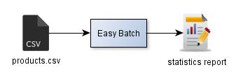

In this tutorial, the goal is to process a delimited-values flat file containing products data and calculate the maximum product price:

In this tutorial, you will learn how to:
DsvRecordMapper with custom parameters and type converterRecordProcessor.getEasyBatchResult to get a computation result at the end of batch executionThe input file named products.csv has the following content:
#"productId"|"name"|"description"|"price"|"published"|"lastUpdate"|"origin" "0001"|"product1"|"description1"|"2500"|"true"|"2014-01-01"|"0" "0002"|"product2"|"description2"|"2400"|"false"|"2014-01-02"|"1" "0003"|"product3"|"description3"|"2300"|"true"|"2014-01-03"|"0" "0004"|"product4"|"description4"|"2200"|"false"|"2014-01-04"|"1" "0005"|"product5"|"description5"|"2100"|"true"|"2014-01-05"|"0" "0006"|"product6"|"description6"|"1100"|"true"|"2014-01-06"|"1" "0007"|"product7"|"description7"|"1200"|"false"|"2014-01-07"|"0" "0008"|"product8"|"description8"|"1300"|"true"|"2014-01-08"|"1" "0009"|"product9"|"description9"|"1400"|"false"|"2014-01-09"|"0"
The record format is self explanatory. The origin field can be national (0) or international (1).
The first record is a header record that should be skipped.
The delimiter is the pipe character ("|") and data is qualified by double quotes ("").
The batch processing logic should calculate the maximum product price for only national published products (published field equals to true and origin field equals to 0).
Let's get started!
Easy Batch development is POJO-based, so first, let's create a java bean representing a product and an enumeration representing the product origin:
public class Product {
private long productId;
private String name;
private String description;
private double price;
private boolean published;
private Date lastUpdate;
private Origin origin;
// Getters and Setters omitted
}
public enum Origin {
NATIONAL,
INTERNATIONAL
}
Easy Batch comes with built-in type converters for all java primitive and wrapper types (please refer to the javadoc of the io.github.benas.easybatch.core.converter package for all details about Easy Batch built-in type converters) and allows to define custom type converters through the TypeConverter interface.
In our tutorial, we will implement the TypeConverter interface to tell Easy Batch how to convert origin String values in CSV records to typed values Origin in the Product bean. So here is the implementation:
public class OriginTypeConverter implements TypeConverter<Origin> {
@Override
public Origin convert(String value) {
return "0".equals(value) ? Origin.NATIONAL : Origin.INTERNATIONAL;
}
}
This type converter will convert String value 0 to Origin.NATIONAL value and String value 1 to Origin.INTERNATIONAL value.
Then, let's code the batch processing business logic by implementing the RecordProcessor interface:
public class ProductProcessor implements RecordProcessor<Product, Double> {
/**
* The maximum product price that will be returned as batch execution result.
*/
private double maxProductPrice;
/**
* Calculate the maximum product price for published products.
*/
public void processRecord(final Product product) throws Exception {
if (product.isPublished() && Origin.NATIONAL.equals(product.getOrigin()) {
double productPrice = product.getPrice();
if (productPrice > maxProductPrice) {
maxProductPrice = productPrice;
}
}
}
/*
* Return the maximum product price.
*/
public Double getEasyBatchResult() {
return maxProductPrice;
}
}
This processor will calculate the maximum product price for national published products as required.
The getEasyBatchResult methods return the computation result that will be able to get at the end of batch execution.
Finally, let's configure an Easy Batch engine to:
products.csv flat fileProduct beanProductProcessorThe following listing provides this configuration:
// Configure the product record mapper
DsvRecordMapper<Product> productMapper = new DsvRecordMapper<Product>(
Product.class, // POJO type
new String[]{"productId","name", "description", "price","published", "lastUpdate" }); //Ordered fields names
productMapper.setDelimiter("|"); // set field delimiter
productMapper.setQualifier("\"");// set data qualifier
productMapper.registerTypeConverter(Origin.class, new OriginTypeConverter()); // register custom type converter
// Build an easy batch engine
EasyBatchEngine easyBatchEngine = new EasyBatchEngineBuilder()
.registerRecordReader(new FlatFileRecordReader("products.csv")) // requirement N°1
.registerRecordFilter(new StartsWithStringRecordFilter("#")) // requirement N°2
.registerRecordMapper(productMapper) // requirement N°3
.registerRecordProcessor(new ProductProcessor()) //requirement N°4
.build();
// Run easy batch engine and get execution report
EasyBatchReport easyBatchReport = easyBatchEngine.call();
// Print the batch report
System.out.println("easyBatchReport = " + easyBatchReport);
// Get the batch computation result
Double maxProductPrice = (Double) easyBatchReport.getEasyBatchResult();
// Print the maximum price
System.out.println("The maximum product price for national published products is : " + maxProductPrice);
That's all, we can now run the batch and see the results!
The complete source code of this tutorial is available here.
To run the tutorial with maven, launch the following command in the easybatch-tutorials directory :
mvn exec:java -PrunProductsTutorial
At the end of execution, you should see the following output in the console:
INFO: Initializing easy batch engine
INFO: Data source: /data/in/products.csv
INFO: Total records = 10
INFO: easy batch engine is running...
INFO: Record #1 [StringRecord{number=1, rawContent='#"productId"|"name"|"description"|"price"|"published"|"lastUpdate"'}] has been filtered
INFO: Shutting down easy batch engine
Easy Batch Report:
Start time = 2014-01-18 08:13:35
End time = 2014-01-18 08:13:35
Batch duration = 0s
Data source = /data/in/products.csv
Total records = 10
Filtered records = 1 (10%) [1]
Ignored records = 0 (0%) []
Rejected records = 0 (0%) []
Error records = 0 (0%) []
Success records = 9 (90%)
Average record processing time = 0.0s
Result = 2500.0
The maximum product price for published products is : 2500.0
As you can see, Easy Batch generated an execution report at the end of execution containing the following information:
RecordProcessor.getEasyBatchResult methodFor more details about the EasyBatchReport API, please refer to the user guide.
In this tutorial, we have seen how to:
DsvRecordMapper with custom parameters and type converterRecordProcessor.getEasyBatchResult to get a computation result at the end of batch executionUsing Easy Batch, all we have done is :
Easy Batch handled all the plumbing code of reading, filtering, parsing and mapping products data to instances of our domain object Product.
The following table summarizes what we have done and what Easy Batch has done for us :
| Task | You | Easy Batch |
|---|---|---|
| Provide configuration meta data | ||
| Provide record processing logic | ||
| Handle I/O for input file | ||
| Read input file record by record | ||
| Filter comment records | ||
| Map records to domain objects | ||
| Apply business processing logic | ||
| Generate a batch execution report |